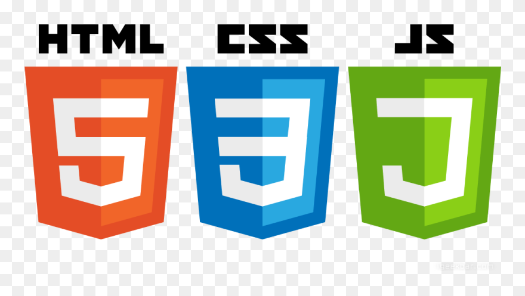
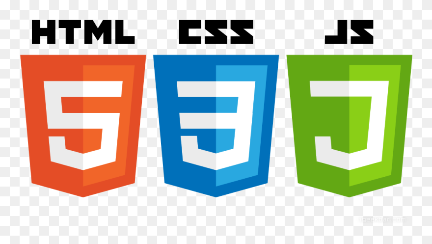
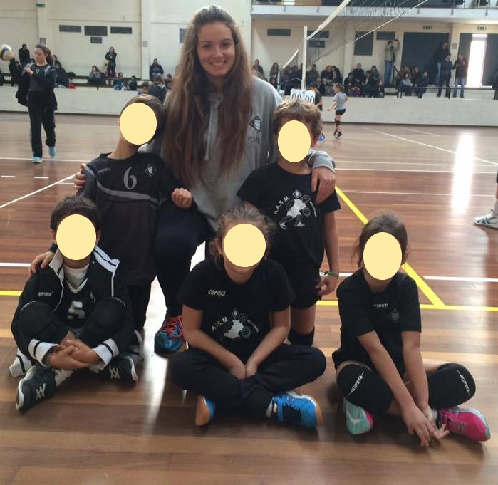
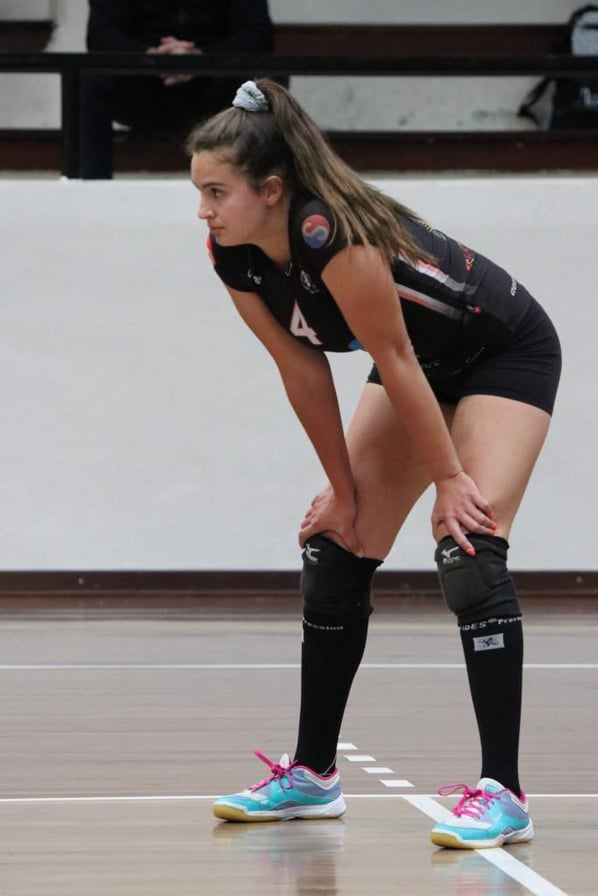
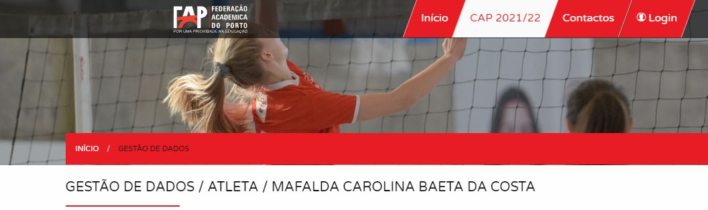
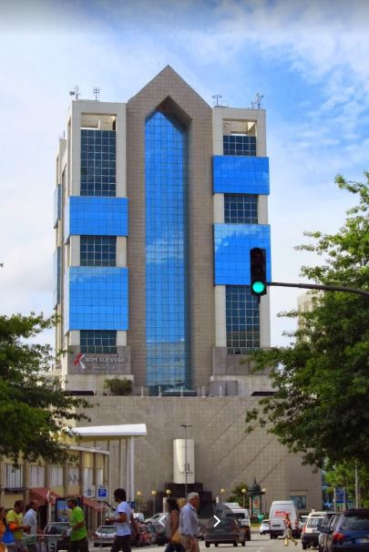
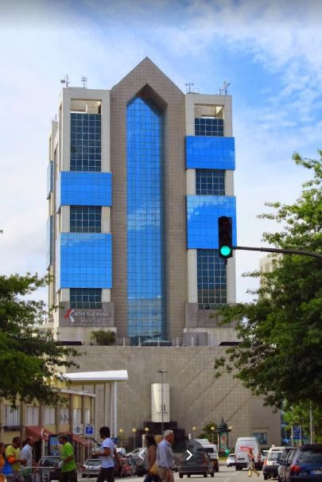

Competências
Espírito de Equipa

Proativa
Boa comunicação
Empenhada
Adaptabilidade


 

Conhecimentos de ferramentas do Office (Word, PowerPoint e Excel), ArcGis, e Programação
Experiência Profissional
EMPREGADA DE LOJA
De junho a setembro, todos os verões desde 2016 até 2021, em
Portimão, onde desempenhava funções de caixeira, atendimento ao
público (incluíndo estrangeiros) e reposição de stock.
TREINADORA DE MINIVOLEI
De setembro de 2016 a maio de 2017, na Associação Académica de São Mamede de Infesta.

Percurso Académico
Atividades Extracurriculares
Federada em Voleibol, Atleta na Associação Académica de São Mamede de Infesta desde 2016 até 2021.

Atleta no Desporto Escolar da Faculade de Letras da Universidade do Porto.

Cliente no ginásio Bom sucesso Health Club.

Cliente no ginásio Bom sucesso Health Club. 
Formação
Projetos da Licenciatura
Projetos de Mestrado
Projeto no âmbito da Unidade Curricular de Aplicações e Websig em Ordenamento do Território
i
No âmbito da unidade curricular de Aplicações e Websig em Ordenamento do Território,
observa-se no presente mapa, uma análise espacial da acessibilidade ativa às escolas de Ensino Básico Secundário (EBS) e Ensino
Secundário (ES) no concelho do Porto.
No campo das camadas do mapa, encontram-se dois basemaps, o primeiro é constituído pelo terreno (imagens satélite), e o segundo, contém a rede viária e ciclovias. Posto isto, é possível ver a distribuição espacial dos pontos de partilha das trotinetes elétricas da Bird/Circ, dos bicicletários, local cujo se podem estacionar as bicicletas, e por fim as escolas EBS e ES. Com o auxílio do ''heatmap" é possível identificar as áreas de calor onde estes se concentram.
De seguida, apresentra-se a população alvo, ou seja, a população na faixa etária entre os 14 e 19 anos, e também as áreas de influência de cada escola, numa distância de 15 minutos a pé. Por fim, foi realizado trabalho de campo em prol de outra unidade curricular, onde se registou 102 pontos de partilha permitindo atribuir uma fotografia do local a cada um dos pontos, estas podem ser visualizadas nos popups.
No campo das camadas do mapa, encontram-se dois basemaps, o primeiro é constituído pelo terreno (imagens satélite), e o segundo, contém a rede viária e ciclovias. Posto isto, é possível ver a distribuição espacial dos pontos de partilha das trotinetes elétricas da Bird/Circ, dos bicicletários, local cujo se podem estacionar as bicicletas, e por fim as escolas EBS e ES. Com o auxílio do ''heatmap" é possível identificar as áreas de calor onde estes se concentram.
De seguida, apresentra-se a população alvo, ou seja, a população na faixa etária entre os 14 e 19 anos, e também as áreas de influência de cada escola, numa distância de 15 minutos a pé. Por fim, foi realizado trabalho de campo em prol de outra unidade curricular, onde se registou 102 pontos de partilha permitindo atribuir uma fotografia do local a cada um dos pontos, estas podem ser visualizadas nos popups.